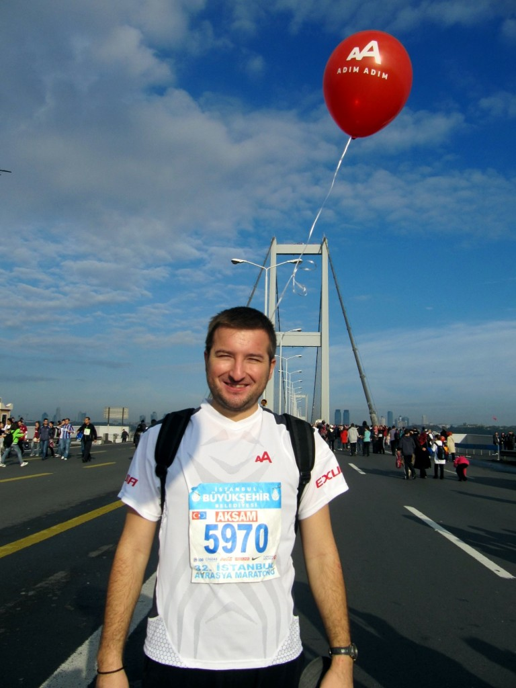

Bir Adım sizden, bir Adım benden
Değerli ismailari.com okurları,
Bu haftasonu 32. Kıtalarararası Avrasya Maratonu var ve ben de 15 km. koşacağım. Hem de bu koşuda yalnız değilim; sadece koşmakla kalmayıp attıkları her adımı sosyal sorumluluk projelerine destek amacıyla atan Adım Adım koşucuları ile birlikteyim :) Bir süredir gönüllüsü olduğum İLKYAR'a (yatılı ilköğretim bölge okullarındaki küçük kardeşlerimize) destek için koşacağım. Küçüklerimizin daha çok kitapla buluşması, okuyup büyük işler başarması ve koltuklarımızı kabartması için hepimizin desteğine ihtiyaç var. Sizlerin desteğini bekliyor, pamuk eller cebe diyorum :)
Adım Adım, profesyonel ve amatör koşucuların oluşturduğu bir topluluk. Amacı çok nezih; sosyal sorumluluk projelerine destek çekmek ve bağış toplamak. Şimdiye kadar Toplum Gönüllüleri, Türkiye Eğitim Gönüllüleri Vakfı ve Türkiye Omurilik Felçlileri Derneği'nin projeleri için önemli destekler toplandı.
İLKYAR (İlköğretim Okullarına Yardım Vakfı) ise cehalete karşı kalemlerini kuşanan gönüllülerden oluşan bir topluluk. ODTÜ, Boğaziçi Üni. ve Mersin Üni. öğrenci topluluklarının katılımıyla YİBO(Yatılı İlköğretim Bölge Okulları)'da okuyan köy çocuklarının eğitim, bilim ve okumaya teşvik edilmesi amaçlı YİBO'lara giderek motivasyon arttırma çalışmaları yapmakta ve her gittiğimiz okulda bir kütüphane ve bir oyun odası kurmaktayız. İLKYAR gönülleri olarak tüm bunları bir karşılık beklemeden yapmakta ve gittiğimiz okullardan yetişen cevherlerin nasıl da hayata sıkı sıkı sarıldıklarını gördükçe kıvanç duymaktayız. Bizler için bu inanılmaz bir mutluluk kaynağı. Yaptıklarımızın bizde ve YİBO'lu kardeşlerimizde bıraktığı izler paha biçilemez fakat okullarda kurduğumuz her bir kütüphanenin ederi 2700 TL ve her bir oyun odasının da bize maliyeti 1400 TL. Bunun için de maddi kaynak gerekmekte.
Sizden bu çabamız için desteklerinizi bekliyorum. Bağış adımı sizden, maraton ve kütüphane adımı bizden! 5 olur 15 olur, 50 olur 150 olur, sonuçta damlaya damlaya göl olur... Lütfen yapacağınız yardımı az görmeyin, cehalete karşı bir kalemde siz kuşanın!
Bağışlarınızı doğrudan İLKYAR hesabına yapabilirsiniz.
Banka: İş Bankası ODTÜ Şubesi IBAN No: TR26 0006 4000 0014 2290 706968 Alıcı Adı: İLKYAR Açıklama: AAO ISMAILARI, Kendi Adınız Soyadınız
Yüzünüzü kara çıkarmayacağıma ve yarışta sonuncu olmayacağıma söz veriyorum :)
Not 1: Banka dekontunda açıklama kısmını üstteki gibi doldurmanız takip açısından gerekli.
Güncelleme:
15 km.'yi AdımAdım ekibiyle hep birlikte bitirdik. Destek veren tüm dostlara sonsuz teşekkürler!
